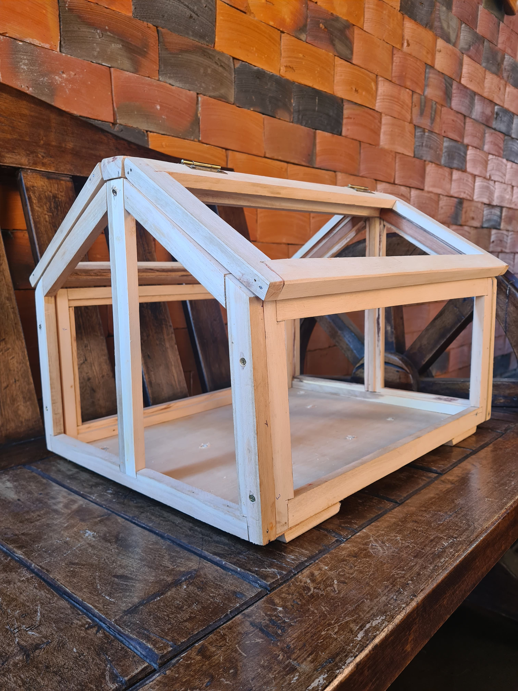
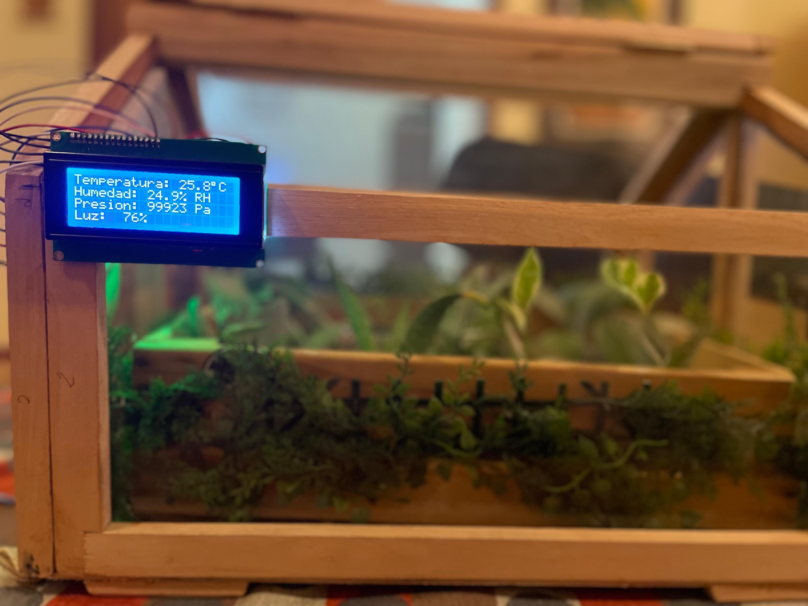
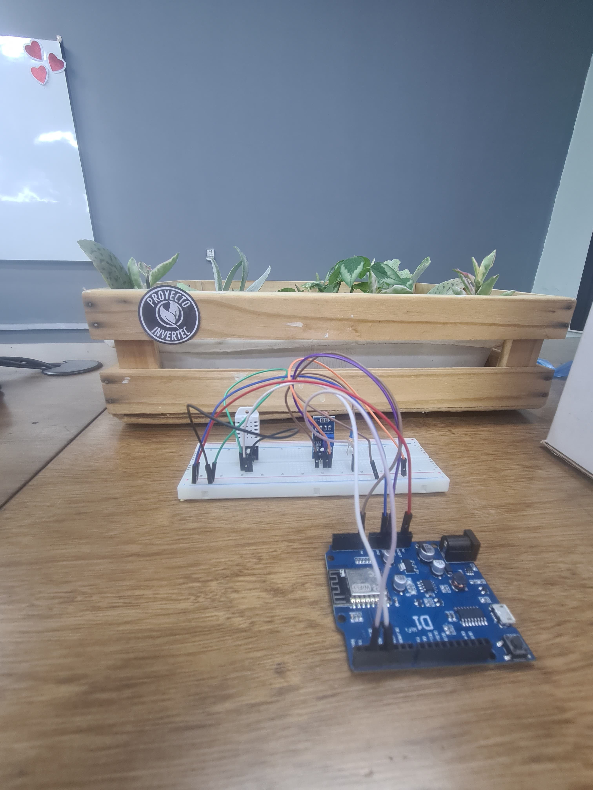

Nuestro proyecto se enfoca en abordar los desafíos apremiantes que enfrenta la flora en un mundo en constante cambio. Dada la creciente preocupación por el impacto del cambio climático y la necesidad de encontrar soluciones más sostenibles, hemos tomado la iniciativa de monitorear de manera sistemática las condiciones climáticas en un invernadero.
Nuestro tema trata sobre el Monitoreo de las condiciones ambientales de un invernadero. Con el uso de Arduino y sensores de medición de temperatura, humedad y presión atmosférica, buscamos comprender y mejorar el entorno para el crecimiento de las plantas.


